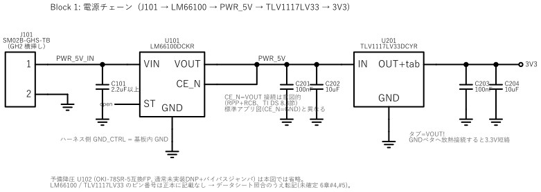
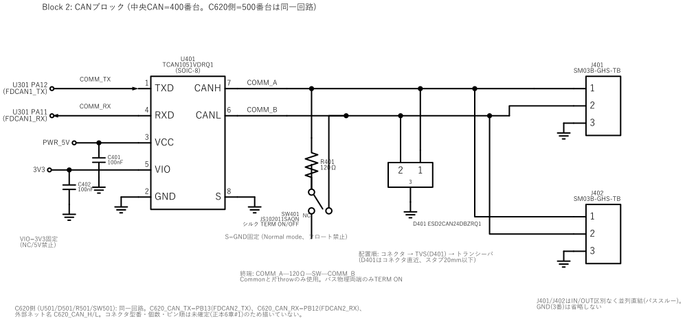
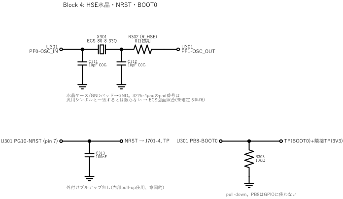
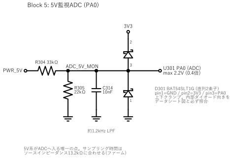
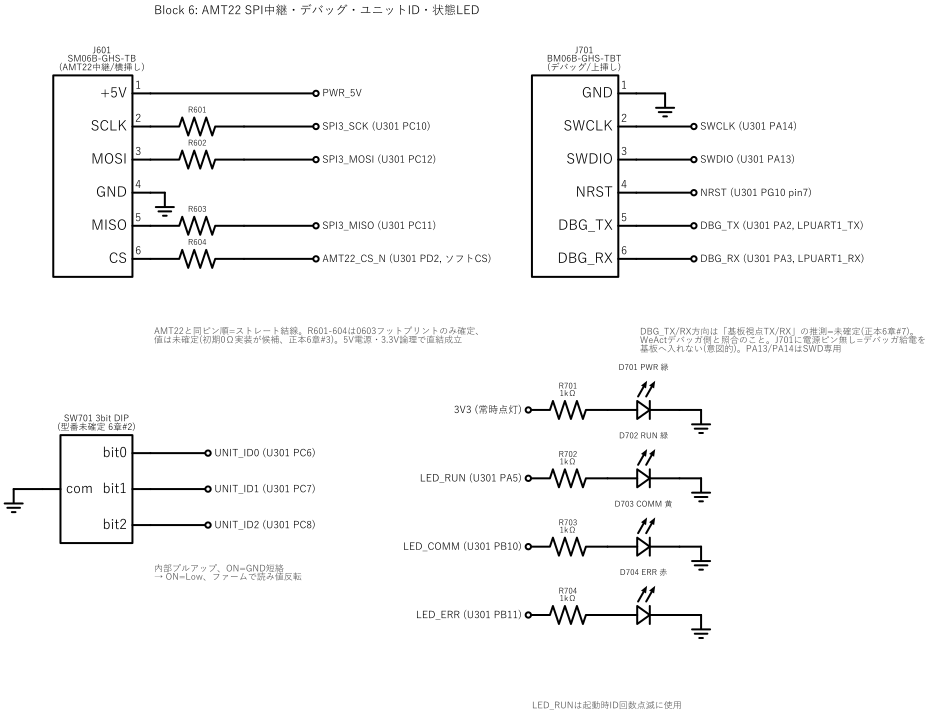

重要: U101のCE_N=VOUTは意図的なRPP+RCB構成。U201のタブはVOUTであり、GNDへ接続しない。
| Ref | 種別 | 容量・値・型番 | サイズ/パッケージ | 備考 |
|---|---|---|---|---|
| J101 | 電源コネクタ | SM02B-GHS-TB | JST GH, 2 pin, 1.25 mm, 横挿し | 1=PWR_5V_IN, 2=GND |
| U101 | 理想ダイオード | LM66100DCKR | SC70-6 | 1.5 A; CE_N=VOUT, ST=open |
| U201 | 3.3 V LDO | TLV76133DCYR | SOT-223 | タブ=VOUT、旧TLV1117LV33と同一ピン配置 |
| C101 | セラミックC | 2.2 µF以上, X7R | 0603以上（DC bias要確認） | U101 VIN直近 |
| C201, C203 | デカップリング | 100 nF, X7R | 0603 | LDO入力/出力 |
| C202, C204 | バルクC | 10 µF, X7R | 0805推奨 | DC bias後の実効容量を確認 |

配置: コネクタ → TVS → トランシーバの順。D401はコネクタ直近、スタブは20 mm以下。SピンはGND固定。
| Ref | 種別 | 容量・値・型番 | サイズ/パッケージ | 備考 |
|---|---|---|---|---|
| U401 / U501 | CANトランシーバ | TCAN1051VDRQ1 | SOIC-8 | VCC=5 V, VIO=3.3 V, Classic CAN 1 Mbps |
| D401 / D501 | CAN TVS | ESD2CAN24DBZRQ1 | SOT-23-3 | 2 ch, 24 V working; pin 3=GND |
| R401 / R501 | 終端抵抗 | 120 Ω, RC0603FR-07120RL | 0603 | バス物理両端のみON |
| C401/C402 | デカップリング | 100 nF, X7R | 0603 | VCCとVIOに各1個、IC直近 |
| SW401/SW501 | SPDTスライドSW | JS102011SAQN | J-hook SMT | Common+片throwを使用 |
| J401/J402 | CANコネクタ | SM03B-GHS-TB ×2 | JST GH, 3 pin, 1.25 mm, 横挿し | 1=COMM_A, 2=COMM_B, 3=GND |
各VDD/VSSピン対に100 nFを1個ずつ割り当てる。VDDA/VREF+の帰路はVSSA pin 27近傍へ最短で戻す。
| Ref | 種別 | 容量・値・型番 | サイズ/パッケージ | 備考 |
|---|---|---|---|---|
| U301 | MCU | STM32G474RET6 | LQFP64, 10×10 mm, 0.5 mm pitch | 3.3 V |
| C301–C305 | デカップリング | 100 nF, GRM188R71A104KA01D | 0603 | VDD ×4 + VBAT ×1 |
| FB301 | フェライトビーズ | BLM18AG601SN1D, 600 Ω @100 MHz | 0603 | 3V3→VDDA_A |
| C306/C307 | VDDAフィルタ | 100 nF / 1 µF, X7R | 0603 | VDDA pin 29直近 |
| R301 | VREF+リンク | 0 Ω, RC0603JR-070RL | 0603 | 将来の外部基準用 |
| C308/C309 | VREF+フィルタ | 10 nF C0G / 1 µF X7R | 0603 | VREF+ pin 28直近 |
| C310 | 3.3 Vバルク | 4.7 µF, GRM21BR71A475KA73L | 0805 | 3.3 Vレール |

実装前確認: X301の4 pad番号とECS図面を照合。水晶・負荷容量はPF0/PF1直近に置き、他信号を下に通さない。
| Ref | 種別 | 容量・値・型番 | サイズ/パッケージ | 備考 |
|---|---|---|---|---|
| X301 | HSE水晶 | ECS-80-8-33Q-JES-TR, 8 MHz, CL=8 pF | 3225, 4 pad | ±20 ppm, ESR max 500 Ω |
| C311/C312 | 負荷容量 | 10 pF, C0G, GRM1885C1H100JA01D | 0603 | 実機で8.2/10/12 pFを評価 |
| R302 | HSE直列抵抗 | 0 Ω（初期） | 0603 | OSC_OUT側、drive level評価用 |
| C313 | NRSTコンデンサ | 100 nF, X7R, 50 V, GRM188R71H104KA93D | 0603 | 外付けpull-upなし |
| R303 | BOOT0 pull-down | 10 kΩ, RC0603FR-0710KL | 0603 | PB8はGPIOに使用しない |

修正済み: D301下側クランプのカソードをADC_5V_MONに明示配線。ファームは13.2 kΩのソースインピーダンスに合う長いADCサンプル時間を使う。
| Ref | 種別 | 容量・値・型番 | サイズ/パッケージ | 備考 |
|---|---|---|---|---|
| R304 | 分圧上側 | 33 kΩ, 1%, RC0603FR-0733KL | 0603 | PWR_5V→ADC_5V_MON |
| R305 | 分圧下側 | 22 kΩ, 1%, RC0603FR-0722KL | 0603 | ADC_5V_MON→GND |
| C314 | LPF | 10 nF, X7R, GRM188R71H103KA01D | 0603 | 約1.2 kHz |
| D301 | 上下クランプ | BAT54SLT1G | SOT-23 | 1=GND, 2=3V3, 3=ADC; 内部向き要照合 |

J701はターゲット自己給電のため電源ピンなし。DBG_TX/RXの方向とID DIPの正式型番は未確定。DIPはON=Lowでファーム側で反転する。
| Ref | 種別 | 容量・値・型番 | サイズ/パッケージ | 備考 |
|---|---|---|---|---|
| J601 | AMT22コネクタ | SM06B-GHS-TB | JST GH, 6 pin, 1.25 mm, 横挿し | AMT22と同ピン順 |
| R601–R604 | SPI直列抵抗 | TBD（初期0 Ω候補） | 0603 | 実機波形で22–100 Ωも評価 |
| J701 | SWD/UARTコネクタ | BM06B-GHS-TBT | JST GH, 6 pin, 1.25 mm, 上挿し | 1=GND; 電源ピンなし |
| SW701 | ID DIPスイッチ | 3 bit, SMT, 型番TBD | 3-position SMT DIP | PC6/PC7/PC8, ON=GND |
| R701–R704 | LED電流制限 | 1 kΩ, RC0603FR-071KL | 0603 | PWR/RUN/COMM/ERR |
| D701/D702 | 緑LED | LTST-C190KGKT | 0603 | PWR / RUN |
| D703 / D704 | 黄 / 赤LED | LTST-C190KSKT / LTST-C190KRKT | 0603 | COMM / ERR |
注意: Matek CAN-G474試験機のCAN2=PB5/PB6・SPI2=PB13/PB14/PB15は別のボード定義で、この自作基板には使用しない。
| 物理pin | 名称 | 接続 |
|---|---|---|
| 1 | VBAT | 3V3; C305 100 nF |
| 16 / 32 / 48 / 64 | VDD | 3V3; C301–C304 100 nFを各pinに1個 |
| 15 / 31 / 47 / 63 | VSS | GND plane |
| 29 / 28 / 27 | VDDA / VREF+ / VSSA | VDDA_A / R301経由VDDA_A / GND |
NCピンは回路上で未接続。ファームでは原則アナログ入力・プル無しとし、CubeMX設定時にAN5093と再照合する。
| PB8 | BOOT0専用。GPIOに再利用しない。 | PA13 / PA14 | SWD専用。 | PB3 | SWO用テストポイントとして予約。 |